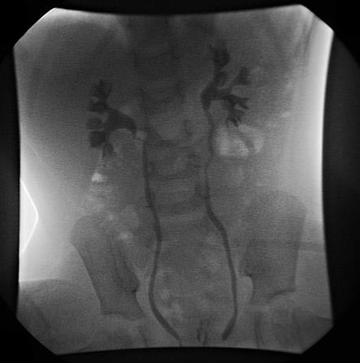
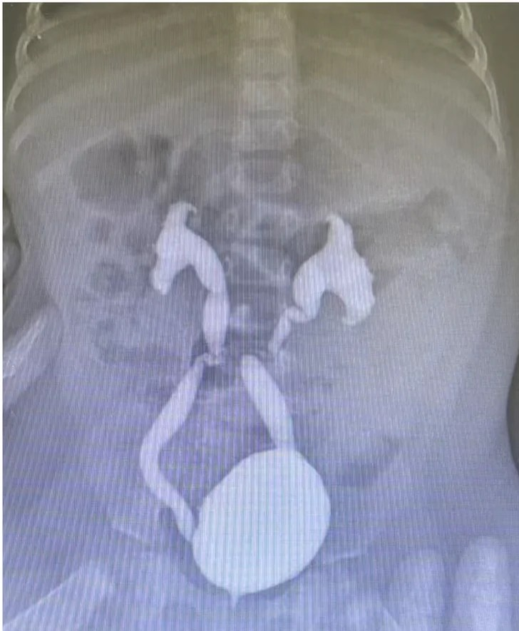
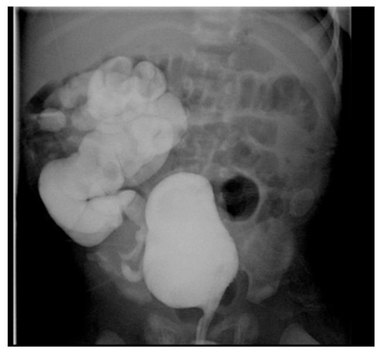

泌尿道感染與膀胱輸尿管逆流
嬰幼兒發燒、卻沒有咳嗽流鼻水，就要想到泌尿道感染。及早驗尿、確實治療，大多數孩子都能完全康復；反覆感染的孩子，醫師會進一步檢查是否有膀胱輸尿管逆流。
1細菌怎麼跑進去？
泌尿道包括腎臟、輸尿管、膀胱、尿道。大多數感染是住在腸道、會陰部的大腸桿菌，沿著尿道往上爬進膀胱；如果再往上跑到腎臟，就會造成高燒的腎盂腎炎。
2誰比較容易得？
3各年齡的症狀
👶 嬰幼兒（不會表達）
- 發燒，常常是唯一的症狀
- 哭鬧、煩躁、活力變差
- 不想喝奶、嘔吐、腹瀉
- 尿布有異味、尿液混濁
- 新生兒可能出現黃疸、體重不增加
🧒 大孩子
- 尿尿會痛、有灼熱感
- 頻尿、急尿、一直想尿
- 原本不尿床又開始尿床
- 下腹痛；發燒合併腰痛要想到腎臟感染
- 尿液有臭味、混濁或帶血
4怎麼驗尿？
確診需要尿液檢查加上尿液培養。收集尿液的方法很重要，方法不對，結果可能被皮膚上的細菌汙染。
| 方法 | 適用 | 說明 |
|---|---|---|
| 導尿 | 還沒戒尿布的嬰幼兒 | 用細管從尿道取尿，結果最可靠，用來做尿液培養 [1]。 |
| 尿袋 | 嬰幼兒初步篩檢 | 容易被皮膚細菌汙染：結果正常有參考價值，但異常時要再用導尿確認，不能直接拿來做培養 [1]。 |
| 中段尿 | 已經會自己尿尿的孩子 | 先洗手、清潔外陰部（女孩由前往後擦、男孩把包皮輕輕往後推），前面一小段尿掉，接中間的尿。 |
5治療
- 抗生素：大多數孩子可以在家口服抗生素，效果和打針一樣。醫師會依尿液培養結果調整藥物。
- 需要住院打點滴的情況：2 個月以下的寶寶、看起來病得很重、一直嘔吐吃不下藥、脫水。
- 照時間吃完整個療程：通常 1–2 天內退燒、精神變好，但不要自行停藥。
- 多喝水、不憋尿，發燒時可使用退燒藥。
- 回診：吃藥 48 小時後仍然發燒，或精神、食慾沒有改善，要回診重新評估。
6膀胱輸尿管逆流（VUR）是什麼？
正常的輸尿管會斜斜地穿過膀胱壁，形成一段隧道。膀胱裝滿或用力尿尿時，這段隧道會被壓扁，像單向閥門一樣，讓尿液只往下流。如果這段隧道太短，閥門關不緊，尿液就會倒流回輸尿管甚至腎臟，細菌也跟著跑上去，造成反覆的腎臟感染。
逆流的嚴重程度分成 5 級
| 分級 | 白話說明 | 預後 |
|---|---|---|
| 第 I–II 級（輕度） | 尿液倒流到輸尿管或腎盂，但沒有擴張 | 多數隨著長大自然消失 |
| 第 III 級（中度） | 輸尿管和腎盂輕到中度擴張 | 不少會自然改善，需定期追蹤 |
| 第 IV–V 級（重度） | 輸尿管明顯擴張、彎曲，腎盞變形 | 較不容易自然消失，腎臟受損風險較高；醫師可能建議預防性抗生素或手術 |
7需要哪些檢查？
- 腎臟膀胱超音波：2 歲以下第一次發燒的泌尿道感染，通常會安排超音波看腎臟、膀胱的構造。不痛、沒有輻射 [1]。
- 排尿膀胱尿道攝影（VCUG）：不是每個孩子都要做。超音波異常（例如腎水腫）、或反覆發燒的泌尿道感染時，醫師才會安排 [1]。
- VCUG 怎麼做：從尿道放一條細管，把顯影劑灌進膀胱，在孩子尿尿時照 X 光，看有沒有倒流和倒流到哪裡。過程中家長可以陪伴安撫，約 20–30 分鐘。
- 腎臟核醫掃描（DMSA）：必要時用來看腎臟有沒有發炎或留下疤痕。
VCUG 的實際影像放在下方「醫師參考」的 VUR 分級段落。
8預防再感染
- 治療便秘：多喝水、多吃蔬果，每天規律排便——這是預防反覆感染最重要的一件事。
- 不憋尿、定時尿尿：大孩子每 2–3 小時上一次廁所，尿完再等一下確定尿乾淨。
- 正確擦拭：女孩上完廁所由前往後擦；勤換尿布。
- 男嬰包皮：洗澡時清潔即可，不要硬把包皮往後推。
- 預防性抗生素：有高級數逆流或反覆感染的孩子，醫師可能會開每天睡前吃一次的低劑量抗生素。
- 之後只要不明原因發燒，都要提醒醫師孩子曾經有泌尿道感染，及早驗尿。
9何時要回診？
- 吃抗生素 48 小時後仍然發燒
- 一直嘔吐、吃不下藥或喝不下水、尿量明顯減少
- 精神很差、嗜睡、臉色蒼白或手腳冰冷
- 2 個月以下的寶寶發燒（任何原因都要立刻就醫）
- 痊癒後再次出現不明原因發燒，請盡快驗尿
- 依醫師安排完成超音波或 VCUG 等檢查
近五年實證重點（2026/11 整理）
- 高級數 VUR 的預防性抗生素（PREDICT, NEJM 2023）：1–5 個月、第 III–V 級 VUR、未曾感染的嬰兒，預防性抗生素使第一次泌尿道感染由 35.6% 降至 21.2%（HR 0.55），兩年 NNT 7；但新的腎臟疤痕與 eGFR 無差異，且非大腸桿菌與抗藥菌增加 [4]。
- 療程縮短（STOP, Pediatrics 2024）：單純發燒型泌尿道感染，5 天口服療程在再發率上不劣於 10 天 [6]。
- 療程縮短（SCOUT, JAMA Pediatr 2023）：治療 5 天後已改善的孩子，再給 5 天安慰劑 vs 續用抗生素：治療失敗 4.2% vs 0.6%，未達不劣性，但失敗率低，作者認為 5 天是合理選項 [5]。
- 8–60 天發燒嬰兒（AAP 2021）：依尿液檢查與發炎指數分流，尿液檢查陽性者需培養並依年齡決定住院或門診治療 [2]。
- NICE NG224（2022）：3 歲以上、48 小時內治療反應良好的首次感染，不需常規影像 [3]。
診斷
- 2–24 個月：尿液檢查有膿尿和／或菌尿，且導尿或恥骨上穿刺取得的尿液培養單一致病菌 ≥ 50,000 CFU/mL [1]。
- 收集方法：不會自行排尿的孩子，培養檢體應以導尿或恥骨上穿刺取得；尿袋檢體偽陽性高，只適合篩檢 [1]。
- 8–60 天發燒嬰兒：依 AAP 2021 流程評估尿液、血液與發炎指數，必要時腰椎穿刺 [2]。
- 病原：E. coli 占 80–90%；其餘為 Klebsiella、Proteus、Enterococcus（小嬰兒需涵蓋）、Pseudomonas（構造異常或曾用預防性抗生素者較常見 [4]）。
抗生素與劑量
| 藥物 | 劑量 | 用法 | 備註 |
|---|---|---|---|
| 口服（大多數發燒型 UTI 可直接口服 [1]） | |||
| Cephalexin | 50–100 mg/kg/day | 分 4 次 | 第一代 cephalosporin，依在地抗藥性選用 [1]。 |
| Cefixime | 8 mg/kg/day | QD 或分 2 次 | [1] |
| Cefuroxime axetil | 20–30 mg/kg/day | 分 2 次 | [1] |
| Cefdinir | 14 mg/kg/day | QD 或分 2 次 | [1] |
| Amoxicillin-clavulanate | 20–40 mg/kg/day | 分 3 次 | 依 amoxicillin 計算 [1]。 |
| TMP-SMX | TMP 6–12 mg/kg/day | 分 2 次 | > 2 個月；E. coli 抗藥率高的地區不宜經驗使用 [1]。 |
| 注射 | |||
| Ceftriaxone | 75 mg/kg | IV/IM q24h | [1]；新生兒黃疸者避免。 |
| Cefotaxime | 150 mg/kg/day | IV 分 3–4 次 | [1] |
| Gentamicin | 7.5 mg/kg/day | IV 分 3 次（或 QD） | [1]；監測腎功能與血中濃度。 |
| Ampicillin | 依年齡 | IV | 小嬰兒合併 gentamicin，以涵蓋 Enterococcus。 |
劑量依 AAP 2011 指引附表 [1]。口服與先靜脈後口服的療效相當；退燒、能進食後即可轉口服。
Cefixime 與 levofloxacin 的角色
| 藥物 | 角色 | 建議使用時機 | 劑量 | 療程 |
|---|---|---|---|---|
| Cefixime（第三代口服） | 第一線口服選項之一：對大腸桿菌、Klebsiella、Proteus 活性佳 [1]；對 Enterococcus、Pseudomonas 無效，產 ESBL 菌株通常抗藥 | ① 發燒型 UTI 經驗性口服治療；② 靜脈治療退燒後的口服銜接；依培養與感受性調整 | 8 mg/kg/day QD 或分 2 次 [1] （每日最多 400 mg） | 發燒型 UTI 共 7–14 天（含靜脈）[1]；單純且反應良好者 5 天亦有 RCT 支持 [5,6] |
| Levofloxacin | 保留用藥：對 Pseudomonas、多重抗藥革蘭氏陰性菌有效；兒童 UTI 不是 FDA 核准適應症（氟喹諾酮中只有 ciprofloxacin 核准兒童複雜性 UTI／腎盂腎炎）[11] | 培養證實 Pseudomonas 或多重抗藥菌，且沒有其他口服選擇（可避免住院打針）時；優先考慮 ciprofloxacin [11] | 6 個月–< 5 歲：8–10 mg/kg/dose q12h ≥ 5 歲：10 mg/kg q24h （每日最多 750 mg） [11] | 與發燒型 UTI 相同，依臨床反應 7–14 天 |
Ciprofloxacin（兒童複雜性 UTI 核准用藥）：口服 20–40 mg/kg/day 分 2 次（每劑最多 750 mg）[11]。氟喹諾酮不建議用於預防性抗生素。
Levofloxacin 使用前提醒：屬氟喹諾酮類，在兒童只有少數 FDA 核准適應症（吸入性炭疽、鼠疫），其餘皆為仿單外使用；可能有肌腱、肌肉骨骼、QT 延長、低血糖與神經精神副作用。AAP 建議只在無其他安全有效的選擇、或已知多重抗藥菌時使用 [11]；國內仿單亦不建議常規用於 18 歲以下。
療程長短
| 情況 | 建議 |
|---|---|
| 發燒型 UTI（2–24 個月） | AAP 2011：7–14 天 [1] |
| 單純發燒型 UTI、治療反應良好 | 近年 RCT 支持 5 天口服療程（STOP：再發率不劣於 10 天 [6]；SCOUT：失敗率 4.2% vs 0.6%，低但較高 [5]） |
| 下泌尿道感染（膀胱炎）、≥ 3 個月 | NICE：口服 3 天 [3] |
| < 2 個月、菌血症、構造異常、治療反應差 | 較長療程，依臨床與培養個別調整 |
影像檢查
| 檢查 | AAP 2011（2–24 個月）[1] | NICE NG224 [3] |
|---|---|---|
| 腎臟膀胱超音波（RBUS） | 第一次發燒型 UTI 後皆建議 | 依年齡、是否非典型或反覆感染決定；6 個月以下或非典型感染者建議 |
| VCUG | 不常規；RBUS 顯示腎水腫、疤痕或疑似高級數 VUR／阻塞，或再次發燒型 UTI 時才做 | 限於非典型或反覆感染的嬰兒，或 RBUS 異常者 |
| DMSA | 非常規 | 非典型或反覆感染者，於感染後 4–6 個月評估疤痕 |
非典型感染：病況嚴重、尿流差、腹部或膀胱腫塊、肌酸酐上升、敗血症、48 小時內治療無反應、非大腸桿菌感染 [3]。
VUR 分級與 VCUG 影像
| 分級 | VCUG 表現（International Reflux Study）[8] |
|---|---|
| I | 逆流只到輸尿管，未達腎盂 |
| II | 逆流至腎盂與腎盞，無擴張 |
| III | 輸尿管與腎盂輕至中度擴張，腎盞穹窿輕度變鈍 |
| IV | 輸尿管中度擴張、彎曲；腎盂腎盞中度擴張，穹窿消失但仍保留乳突壓痕 |
| V | 輸尿管嚴重擴張、扭曲；腎盂腎盞嚴重擴張，乳突壓痕消失 |



預防性抗生素與後續處置
- RIVUR（2014）：第 I–IV 級 VUR、曾有 UTI 的兒童，預防性 TMP-SMX 使再發性 UTI 減少約一半，但腎臟疤痕無差異 [7]。
- PREDICT（2023）：第 III–V 級、1–5 個月未曾感染的嬰兒，預防性抗生素減少第一次 UTI（21.2% vs 35.6%，NNT 7／2 年），疤痕與腎功能無差異，非大腸桿菌與抗藥菌增加 [4]。
- 實務：高級數 VUR 的小嬰兒、反覆發燒型 UTI 者可考慮；需與家長討論效益（減少感染）與代價（抗藥性、遵從性）。
| 藥物 | 預防劑量 | 備註 |
|---|---|---|
| TMP-SMX | TMP 2 mg/kg 睡前 QD | > 2 個月。 |
| Nitrofurantoin | 1–2 mg/kg 睡前 QD | > 1 個月；腸胃副作用。 |
| Cephalexin | 10 mg/kg 睡前 QD | 常用於 2 個月以下嬰兒。 |
- 膀胱腸道功能障礙（BBD）：便秘與排尿功能障礙會增加再發與降低 VUR 自癒率，應積極治療。
- 轉介小兒泌尿科：預防性抗生素下仍突破性感染、高級數 VUR 合併腎疤痕、或家長偏好手術者，可考慮內視鏡注射或輸尿管再植入手術。
參考資料
- Roberts KB; Subcommittee on Urinary Tract Infection. Urinary tract infection: clinical practice guideline for the diagnosis and management of the initial UTI in febrile infants and children 2 to 24 months. Pediatrics. 2011;128(3):595–610（2016 年再確認）. AAP 指引
- Pantell RH, Roberts KB, Adams WG, et al. Evaluation and management of well-appearing febrile infants 8 to 60 days old. Pediatrics. 2021;148(2):e2021052228. AAP 指引
- National Institute for Health and Care Excellence. Urinary tract infection in under 16s: diagnosis and management (NG224). 2022. NICE 指引
- Morello W, Baskin E, Jankauskiene A, et al. Antibiotic prophylaxis in infants with grade III, IV, or V vesicoureteral reflux. N Engl J Med. 2023;389(11):987–997. RCT
- Zaoutis T, Shaikh N, Fisher BT, et al. Short-course therapy for urinary tract infections in children: the SCOUT randomized clinical trial. JAMA Pediatr. 2023;177(8):782–789. doi:10.1001/jamapediatrics.2023.1979 RCT
- Montini G, Tessitore A, Console K, et al. Short oral antibiotic therapy for pediatric febrile urinary tract infections: a randomized trial. Pediatrics. 2024;153(1):e2023062598. doi:10.1542/peds.2023-062598 RCT
- RIVUR Trial Investigators. Antimicrobial prophylaxis for children with vesicoureteral reflux. N Engl J Med. 2014;370(25):2367–2376. RCT
- Lebowitz RL, Olbing H, Parkkulainen KV, et al. International system of radiographic grading of vesicoureteric reflux. Pediatr Radiol. 1985;15(2):105–109. 分級來源
- Aldughiem A. Imaging diagnosis of major kidney and urinary tract disorders in children. Medicina (Kaunas). 2025;61(4):696. doi:10.3390/medicina61040696 影像回顧（圖片來源）
- Cheng Y, Liu X, Yang L, et al. Case report: Smith-Magenis syndrome with bilateral high-grade vesicoureteral reflux, hypothyroidism, and seizure in infancy. Front Pediatr. 2026;14:1906694. doi:10.3389/fped.2026.1906694 圖片來源
- Jackson MA, Schutze GE; Committee on Infectious Diseases. The use of systemic and topical fluoroquinolones. Pediatrics. 2016;138(5):e20162706（AAP 已於 2025 年 6 月將此報告列為退休，尚無新版取代）. AAP 臨床報告
文獻搜尋截至 2026 年 11 月。AAP 2011 指引、RIVUR 試驗與 VUR 分級原始文獻超過五年，但仍是目前臨床的主要依據，故列入。
本頁內容整理於 2026 年 11 月，供門診衛教與醫療人員參考，不能取代個別的診察與判斷。藥物劑量請以藥品仿單及最新指引為準。